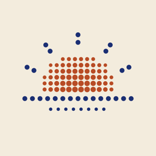

MORE
Less phone handling. More of the morning you enjoy.
Morning Operator, an iPhone prototype by Gibril Bachouchi. October 2026.
Most mornings start with the phone
You pick it up to check the time, and the morning goes with it. MORE turns what you choose to share about your mornings into one routine. You read it, change it and approve it. Then it walks you through it: the weather and your calendar, your mail, one article, one activity you picked, and a short recap at the end.
Nothing runs until you approve. The learning happens on the phone.
A morning, moment by moment
Choose what it learns from
Screen Time, a screen recording you make or import, and the apps you connect.
Read the proposal
It suggests a routine and names the dated mornings it came from. Keep, drop or resize each moment.
Approve it once
Approving saves the routine and starts nothing. The same routine comes back every day.
Start the morning
A short spoken opening with the weather and your calendar, then your unread Gmail, read inside the app.
-
Do the one thing you chose
Open your activity with a timer. Add two minutes or move on from the Lock Screen and the Dynamic Island.
Your activity+2Next Finish and look back
A recap of what you did, skipped or stopped, kept on the phone, with room for a thought.
How it fits together
Everything below happens on the iPhone. There is no MORE account and no MORE server.
On your iPhone
What you choose to share
The morning
One Swift app with a widget, in eight modules: the experience shell, connections, evidence and learning, the approved plan, the morning run, the briefing, review and privacy, and delivery. Raw recordings stay on the phone, and there is no silent fallback to a server.
Recap: where it stands
- 0
accounts or servers of its own. The routine, the evidence and the recap live on the phone.
- 1
routine, approved once and used again every morning.
- 24
frames at most read from an imported recording of up to 31 minutes.
- 1,269
package checks passed in the Gmail implementation run.
It is a prototype. It runs on the owner's iPhone, where Google sign-in, the unread count, reading mail and approving a Screen Time suggestion are confirmed. A complete ordinary morning, replies, alarms and Siri still need their own checks on the phone.
Your mornings stay yours
What it does
- Learns only from what you share, and shows which dates it used
- Reads and thinks on the phone
- Forgets everything it learned when you ask
What it never does
- Send mail or create drafts on Google
- Start a morning or change the routine without you
- Claim a habit the evidence does not show. A missing day is not a zero.
Made with
- Swift
- SwiftUI
- iOS 26
- Foundation Models
- Vision
- FamilyControls
- DeviceActivity
- ActivityKit
- WeatherKit
- EventKit
- HealthKit
- App Intents
- Gmail API, read-only